FolderToTunes
Flujo de importacion y estructura listo para librerias DJ de gran volumen.
Proyectos
Esta pagina es la capa de evidencia: modulos reales, interfaz real y estado real de construccion. Todas las capturas se pueden ampliar.
Implementacion actual en los modulos activos de la suite.
Desliza o usa las flechas para navegar.

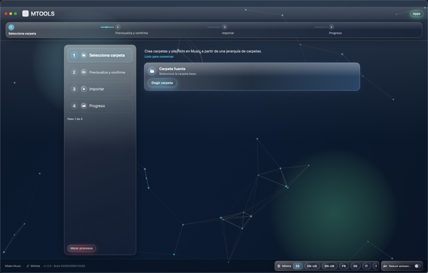
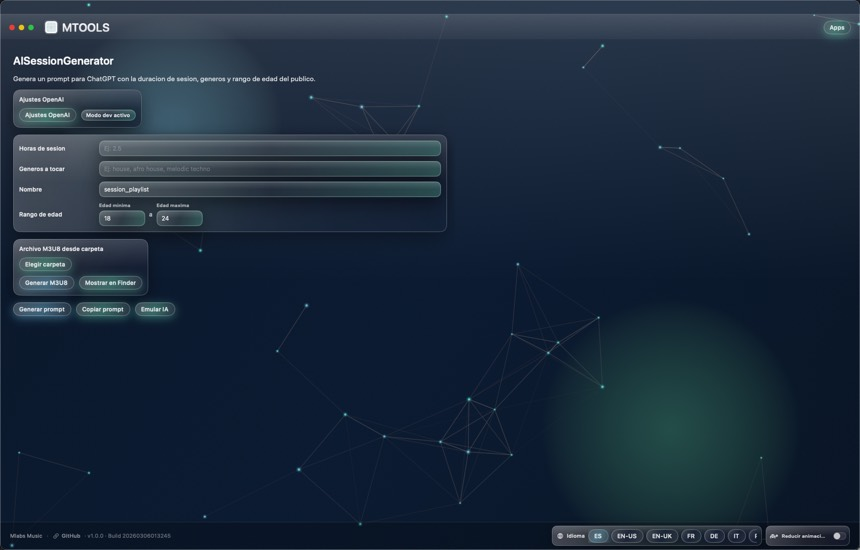
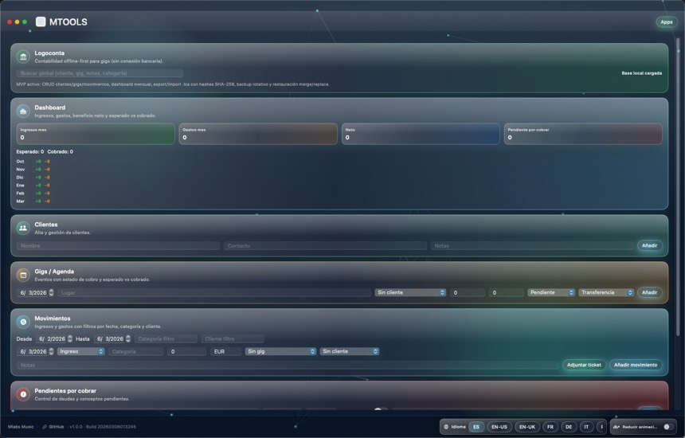


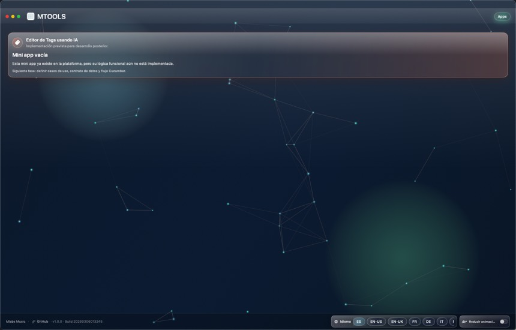
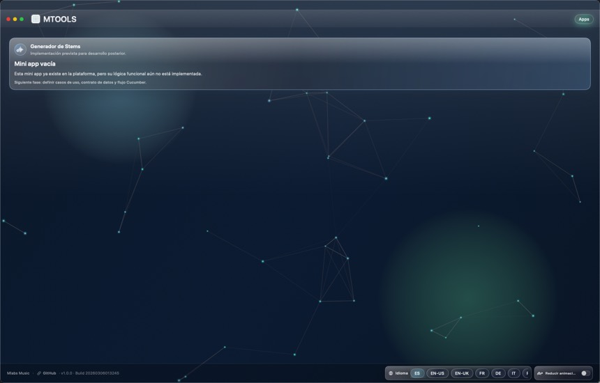
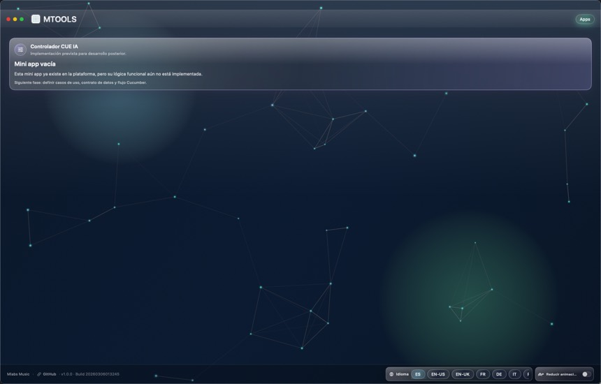
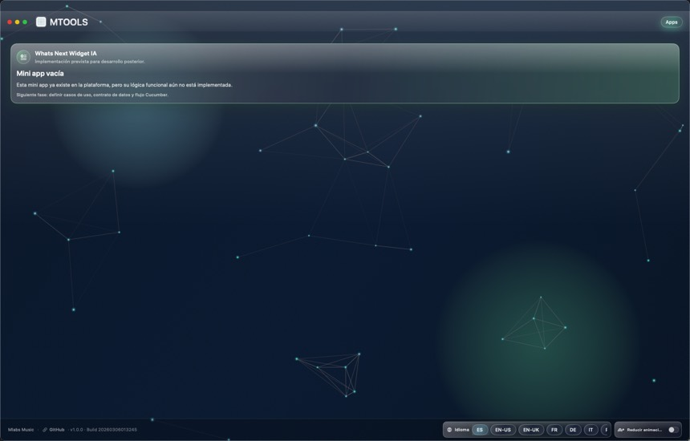
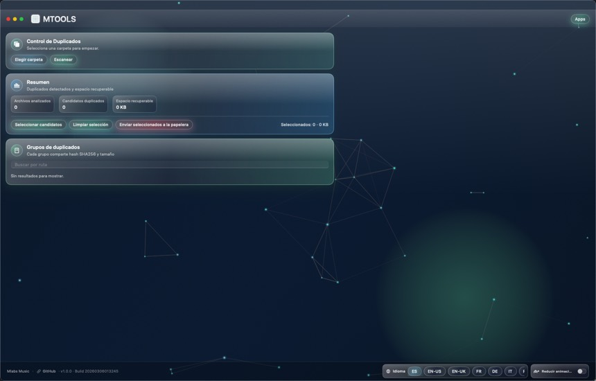
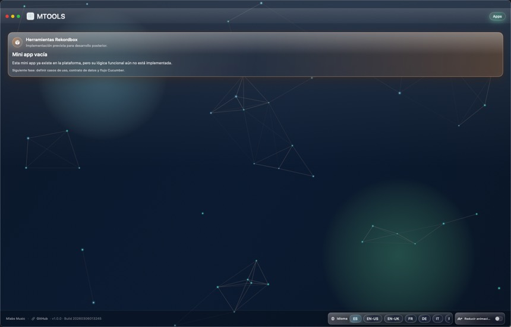
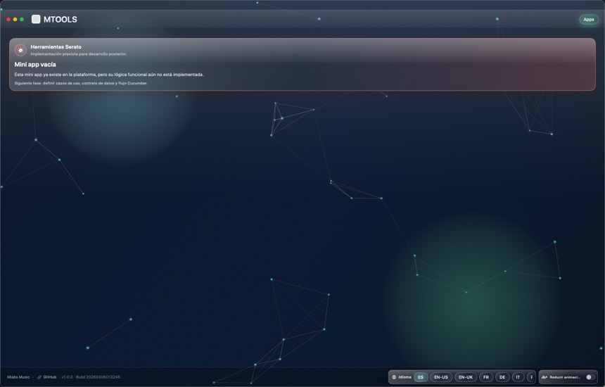
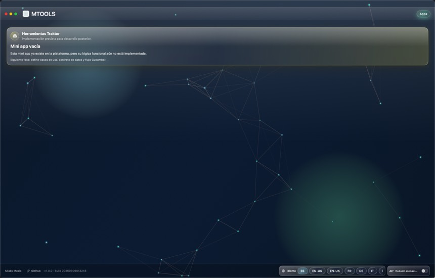
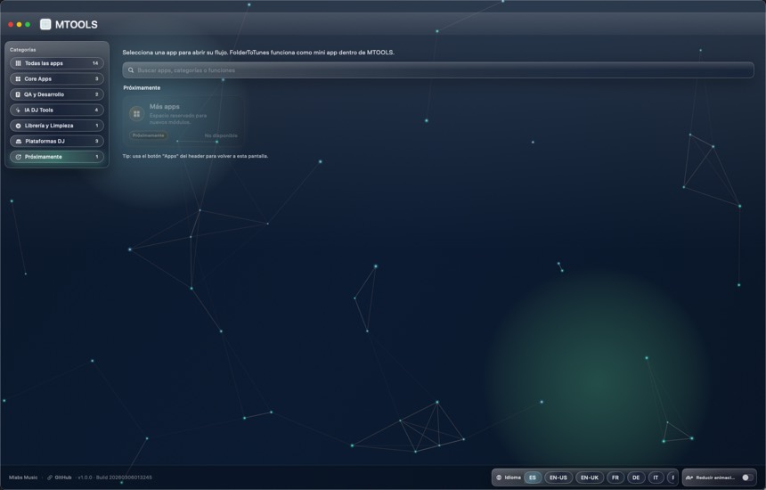
Situacion real de cada modulo principal hoy.
Flujo de importacion y estructura listo para librerias DJ de gran volumen.
Beta activa para preparacion asistida de sets y secuencia narrativa.
Fase MVP orientada a trazabilidad financiera y control operativo.
Capa MVP de validacion, observabilidad y seguridad de release.
Esta parte ahora queda integrada en Proyectos. La pagina cubre evidencia beta y roadmap de acceso privado.
Autenticacion de usuarios para acceso privado.
Visualizacion de planes contratados por cuenta.
Gestion de suscripciones y facturas.
Acceso a herramientas segun perfil de usuario.
MTOOLS se entrega por reserva y validacion de caso de uso.
Solicita una demo orientada a tu operacion en:
info@mlabsmusic.com